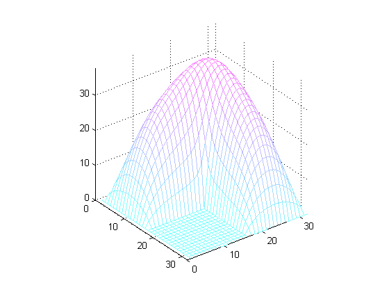

有限差分ラプラシアン
このデモでは、L 字型領域での有限差分ラプラシアンの計算と表示について説明します。
目次
領域
この例では、NUMGRID が L 字型領域内の点に番号を付けます。関数 SPY は、与えられた行列内の非ゼロの要素のパターンを可視化するためのとても役立つツールです。
R = 'L'; % Other possible shapes include S,N,C,D,A,H,B % Generate and display the grid. n = 32; G = numgrid(R,n); spy(G) title('A finite difference grid') % Show a smaller version as sample. g = numgrid(R,12)
g =
0 0 0 0 0 0 0 0 0 0 0 0
0 1 6 11 16 21 26 36 46 56 66 0
0 2 7 12 17 22 27 37 47 57 67 0
0 3 8 13 18 23 28 38 48 58 68 0
0 4 9 14 19 24 29 39 49 59 69 0
0 5 10 15 20 25 30 40 50 60 70 0
0 0 0 0 0 0 31 41 51 61 71 0
0 0 0 0 0 0 32 42 52 62 72 0
0 0 0 0 0 0 33 43 53 63 73 0
0 0 0 0 0 0 34 44 54 64 74 0
0 0 0 0 0 0 35 45 55 65 75 0
0 0 0 0 0 0 0 0 0 0 0 0

離散ラプラシアン
離散ラプラシアンを生成するために DELSQ を使用します。関数 SPY は、行列の母集団のグラフィカルな表現を与えます。
D = delsq(G); spy(D) title('The 5-point Laplacian') % Number of interior points N = sum(G(:)>0)
N = 675

ディリクレの境界値問題
最後に、スパースの線形システムに対するディリクレの境界値問題を解きます。問題は次のように設定します。
delsq(u) = 1 in the interior, u = 0 on the boundary.
rhs = ones(N,1); if (R == 'N') % For nested dissection, turn off minimum degree ordering. spparms('autommd',0) u = D\rhs; spparms('autommd',1) else u = D\rhs; % This is used for R=='L' as in this example end
解
グリッド上に解を写像し、等高線図として示します。
U = G; U(G>0) = full(u(G(G>0))); clabel(contour(U)); prism axis square ij

メッシュ プロットとして解を示します。
colormap((cool+1)/2); mesh(U) axis([0 n 0 n 0 max(max(U))]) axis square ij